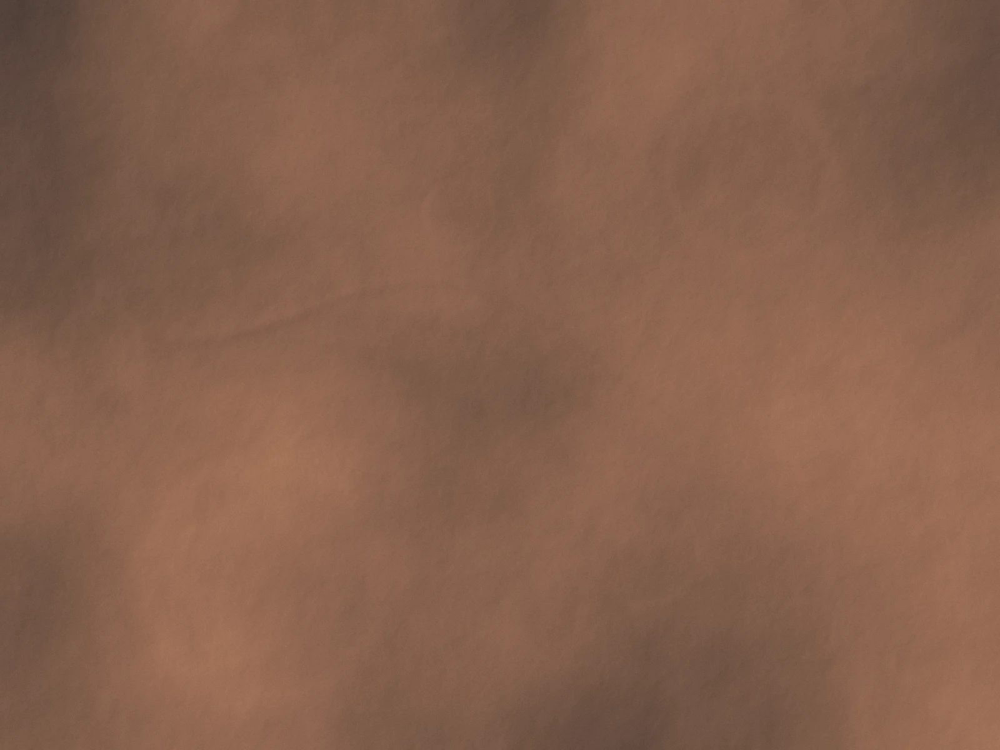

ORBITAL VIEW • MISSION M-01
SIMULATED ORBITAL-STYLE SURFACE
N
PLANNED TRAVERSE SCIENCE TARGET DEMO HAZARD
ILLUSTRATIVE SCALE
MARS / JEZERO SECTOR 07
CAUTION: SYNTHETIC MAP · NO GEOGRAPHIC REGISTRATION

Waypoint selected. This display does not provide live astronaut positioning.